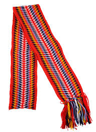

Authentic Ceinture Fléchée - The Pride of the Voyageur
Discover the finest hand-woven sashes crafted by skilled Métis artisans of the Red River Settlement. Each Ceinture Fléchée represents over 200 hours of traditional finger-weaving, passed down through generations.
These magnificent sashes have adorned voyageurs, traders, and distinguished gentlemen throughout the Northwest. A symbol of status and practical utility, the Métis sash is an indispensable accessory for any man of adventure.
Why Choose Our Métis Sash?

Our sashes are woven using the time-honored L'Assomption technique, ensuring unmatched quality and durability.
- Hand-woven by master Métis artisans using traditional finger-weaving methods
- Vibrant, colorfast wool yarns imported from the finest mills
- Distinctive arrow patterns in authentic color combinations
- Serves multiple purposes: belt, carrying strap, emergency rope, and tourniquet
View Our Fine Selection
Each sash is a unique work of art, featuring intricate patterns and rich colors that have made the Ceinture Fléchée famous across the dominion.
Available in traditional red, blue, green, yellow, and white combinations. Custom orders accepted for discerning customers.